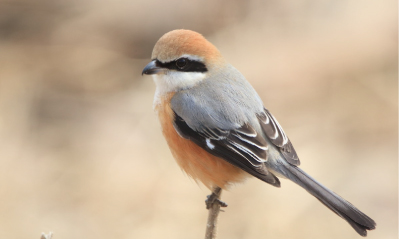
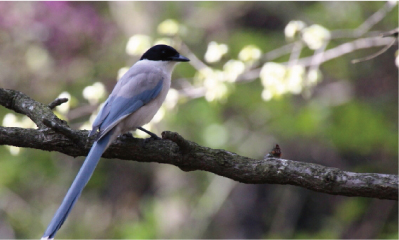

観察報告
メジロ：梅や桜の蜜が好物

メジロは夏の間は涼しい山で過ごし、冬になると里山に降りてきていた鳥。姿が美しく鳴き声の良さから人気があり、一時乱獲されたため絶命が心配されたが、最近は回復してきて街でも冬にはみられるようになった。特に民家の庭先の梅の花や桜の花の蜜を好んで集まる。
モズ：冬の狩人

夏と冬で羽毛の色が変わる。留鳥であるがメジロと同じように冬になると標高の低い場所に移動する。街でみられるのも冬。群れでなく単独で行動し、テリトリーをもって、高い木の上などに留まって鳴く姿がよく見られる。攻撃的で昆虫など小動物を食べるがスズメなどを襲うこともある.。
オナガ：きれいだがカラスの仲間

平地から低山地の比較的明るい森林や竹林を好み、森林に近接する市街地などでも見られる。食性は雑食で、昆虫、果実、種子等を常食し一部は貯食する。樹上に枯れ枝などを使って皿状の巣を作り、1腹6-9個の卵を産む。抱卵期間は17-20日で、雌が抱卵する。雛は約18日で巣立ちする。カッコウの托卵先になることがある。